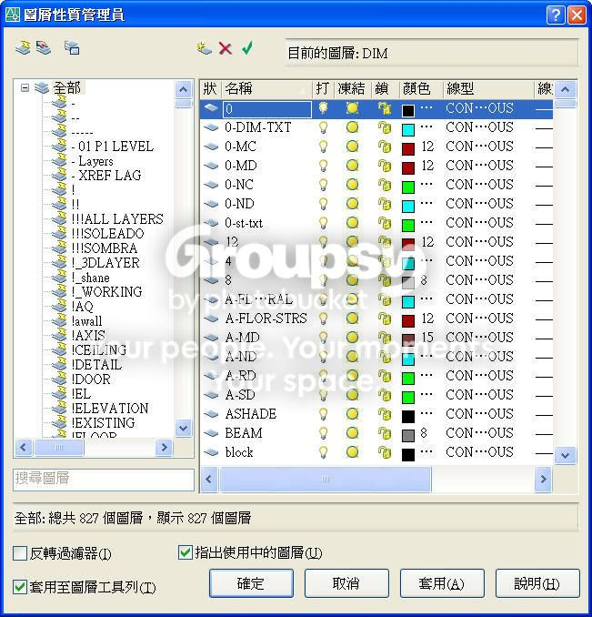
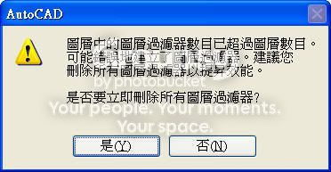
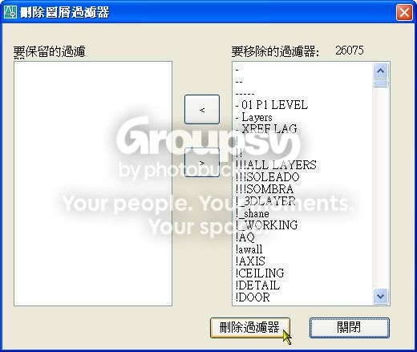
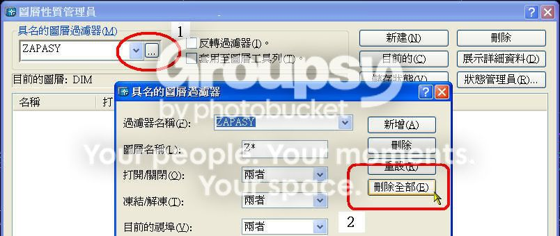

可能因素是因為跨版本，而圖檔本身隱藏了錯誤訊息而造成 錯誤的圖層過濾器，所以圖檔變的很大。
會產生 錯誤的圖層過濾器 原因不明，研判是執行了不完整的程式或檔案非AutoCAD產生的可信任DWG檔。
而且 錯誤的圖層過濾器 由於數量太多(1、2萬個以上)，所以CPU當然不堪負荷，還會造成檔案大小異常的大。

至於 解決方案 依照版本的不同各有不同的方式，其中以 AutoCAD 2006 以上版本最方便且快速。
處理完畢檔案大小會大幅度縮小。
PS:如果圖檔不只一張，那就必須依靠 LISP 搭配 腳本檔(*.scr) 方式來快速解決。
※※※ AutoCAD 2006 以上版本 ※※※
方法1:使用 LAYER 指令 → 出現 是否刪除圖層過濾器? 對話方塊 → 點選 Y(是) 即可。

方法2:使用 FILTERS 指令 → 出現 刪除圖層過濾器 對話方塊 → 點選 刪除過濾器 即可。

※※※ AutoCAD 2005 以下版本 ※※※
方法:使用 LAYER 指令 → 出現 圖層性質管理員 對話方塊 → 點選 具名的圖層過濾器 → 點選 刪除全部 即可。
